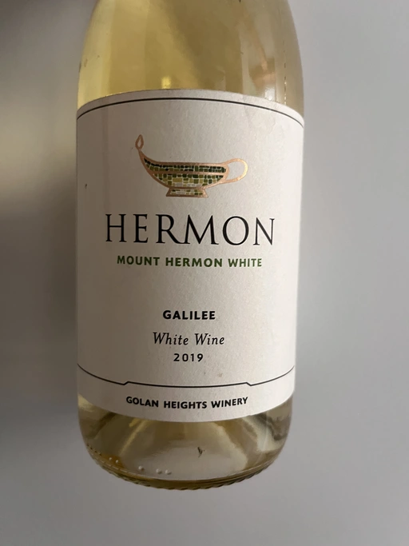
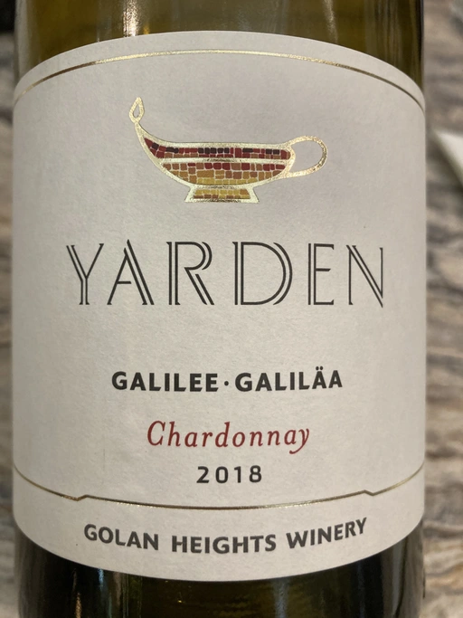
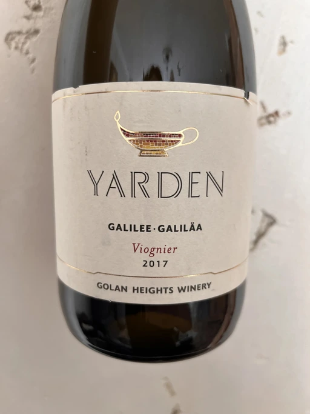
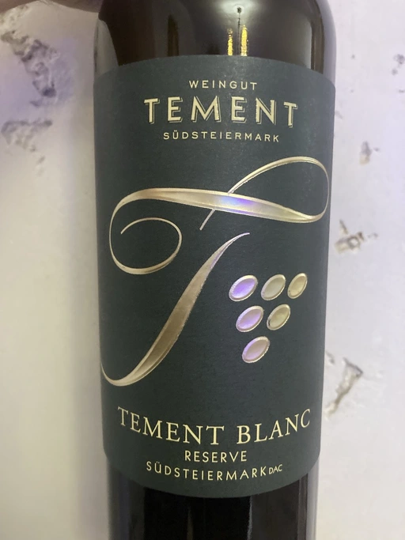
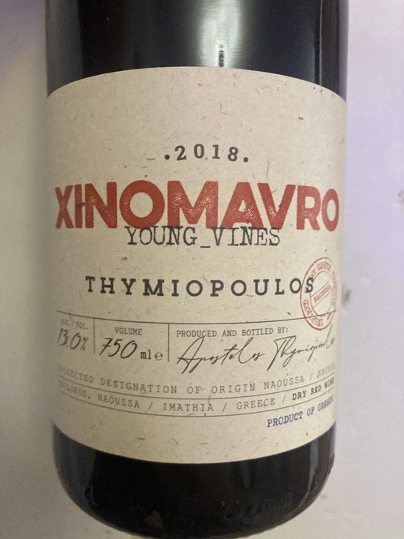
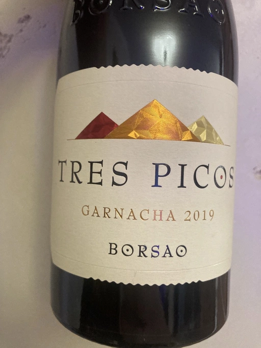
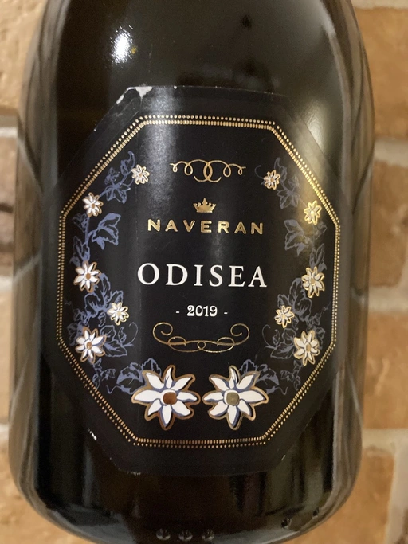

- Type
- White Still, Dry
- Producer
- Golan Heights Winery
- Vintage
- 2019
- Location
- Israel, Golan Heights
- Grapes
- Chardonnay
- Alcohol
- 14
- Sugar
- 3.6
- Price
- 488 UAH, 531 UAH
- Cellar
- N/A
Barrel fermentation for seven months, along with partial MLF.
Ratings
2021-09-25 - 7.50
Compared to previous vintage, 2019 has less oak notes and more citrus stuff. Pear, lemon, hazelnut and melon. Great slightly butter-ish structure, fresh, with neat lemon finish.
2022-01-25 - 8.00
One of my favourite Israeli wines. Easy to understand, yet has multiple layers to offer. Good combination of secondary and primary aromas - stone fruits, citrus, vanilla and butter. Oak is here and is well integrated, and less pronounced than in previous vintage. Dry, medium-full bodied, fresh and absurdly flavourful - popcorn, citrus, bakery and butter. Seems like Golan Highest Winery is on the right path.
Related

Golan Heights Winery
Mount Hermon White - 2019

Golan Heights Winery
Chardonnay Yarden - 2018

Golan Heights Winery
Viognier Yarden - 2017

Weingut Tement
Blanc Reserve - 2017

Thymiopoulos
Xinomavro Young Vines - 2018

Weinert
Cabernet Sauvignon - 2010

Bodegas Borsao
Tres Picos - 2019

Naveran
Odisea - 2019